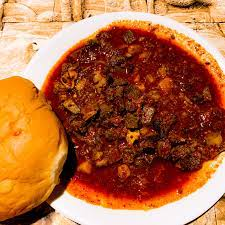

Sorpotel

Description
This is an ancient dish that combines tender pork with spices and vinegar. It is a favourite for feasts, weddings and other events.
Ingredients
- 2.2 pounds boneless pork meat with some fat
- half an onion sliced
- 2 green chilli peppers slit in half
- 2 cups water
- 20 kashmiri chillies dried
- 3 inch ginger
- 20 cloves garlic
- 15 pieces black peppers
- 1 teaspoon cumin seeds
- 10 piece cloves
- 3 inches cinnamon stick
- 1 cup vinegar (coconut or white wine)
- 6 pieces green chilli pepper chopped fine
- 4 medium onions chopped fine (for the curry paste)
- salt to taste
- 2 tablespoons of feni (cashew liquor, optional)
Steps
- In a big pot, place rinsed pork meet together with sliced onion, slit chillies and 2 cups of water. On medium heat cover the pot to parboil the pork meat 20-30 minutes
- Prepare masala paste by combining kashmiri chilli, ginger roory, garlic cloves, black pepper, cumin seeds, cloves, cinnamon, vinegar, oil etc/
- once meat is tender, remove and dice it fine, do NOT throw out the fat
- Keep the meaty stock aside, heat up a pan and fry diced pork batch by batch untill they get some colour
- Add the cooked meat to the fried chillies and onions and stir fry for 2 minutes, continue to add the curry paste and salt with meat stock
- Mix well and bring to a boil, lower heat and simmer. Stir frequently and cook untill it thickens then keep aside